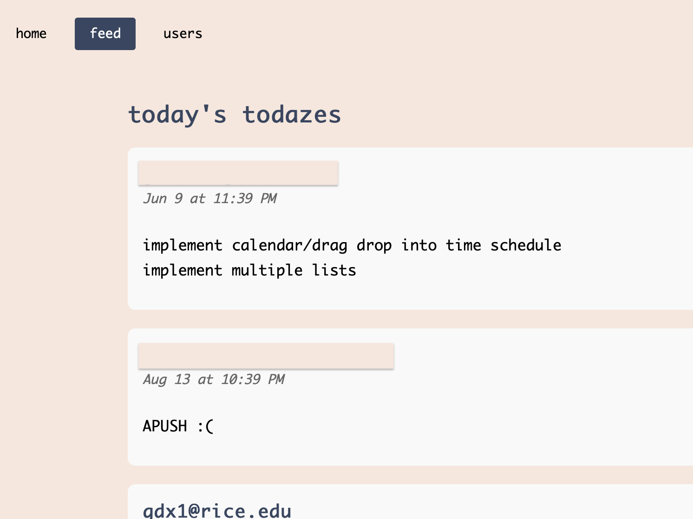

CREATED
← back to creationstodaze
tldr: social media for to-do lists
impact: full-stack app my friends and I can use to stay in touch & be productive :)

live web app →
why
For a few friends of mine, particularly during busy seasons of our lives, we'd often spend time or call to
study and work together; we'd tell each other our to-do lists, and check in to see if we had completed
what we had hoped. In fact, all the way back during Covid, some friends and I had a groupchat where we'd
just text each other our to-do lists.
Especially as more and more of my friends became long-distance,
I wanted a dedicated app that my friends and I could use to motivate each other
even if we weren't together or had the time to call.
Todaze is exactly that - a way to share with friends what we're working on, and check in on each other's progress.
what
social features:- follow users from users page to see their to-do lists in your feed page
- real-time updates on feed page, in chronological order
- see when friends add new tasks or complete tasks
- create tasks on home page
- hover over tasks to see lock, top, and delete buttons
- lock: private tasks with the lock button, preventing them from appearing on the feed
- top: prioritize tasks with the "↑" button, bringing tasks to the top of your personal list
- delete: removes tasks from both your list and the feed
- drag and drop tasks to reorder them
- double click on existing tasks to edit them
- check off completed tasks
how
This app was built through a combination of free ChatGPT prompting and manual coding/debugging. I utilized VSCode, ChatGPT, Github, terminal, Firebase, and also good old Googling. I also had not yet seen Claude Code in action when I first deployed this but now that I have, I may cave soon... especially as in further iterations, I hope to learn a more hands-off workflow.
reflections
This project was born out of 3 main goals: 1) make an app where my friends and I could motivate each other on our to-do lists, 2) create a really simple but effective to-do list app, and 3) learn to vibecode a web app with a database backend. I was able to achieve all three to a baseline level, learning a ton from this process. It was also fun seeing how my friends used the app and suggestions they had. I was able to incorporate several UI suggestions, particularly on the feed page, and have been working through larger UX improvements.
With that said, this app is very much a minimally viable product, emphasis on the minimal, and there are many updates and improvements that I'd like to make, with quite a few feature updates in the pipeline.
Moving forward, I hope to incorporate more social features, learn about more scalable security, and continuously iterate on the product. Probably my favorite personal project!
← back to creations